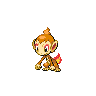
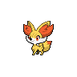

御三家ポケモンの英語名まとめ
第1世代から第9世代まで全27匹
旅の最初にもらえる御三家のポケモンは、英語名もよく考えられています。動物の英語と、くさ・ほのお・みずにちなんだ英単語を組み合わせたものが多く、由来を知ると英単語も自然に覚えられます。
第1世代（カントー）

フシギダネ → Bulbasaur
英語名「Bulbasaur」は、bulb（球根）とdinosaur（恐竜）を組み合わせた名前と考えられている。

ヒトカゲ → Charmander
英語名「Charmander」は、char（焦がす）とsalamander（サンショウウオ）を組み合わせた名前と考えられている。

ゼニガメ → Squirtle
英語名「Squirtle」は、squirt（水を噴き出す）とturtle（カメ）を組み合わせた名前と考えられている。
第2世代（ジョウト）

チコリータ → Chikorita
英語名「Chikorita」は、chicory（チコリ）がもとになっていると考えられている。

ヒノアラシ → Cyndaquil
英語名「Cyndaquil」は、cinder（燃えかす）とquill（ヤマアラシのとげ）を組み合わせた名前と考えられている。

ワニノコ → Totodile
英語名「Totodile」は、tot（ちびっ子）とcrocodile（ワニ）を組み合わせた名前と考えられている。
第3世代（ホウエン）

キモリ → Treecko
英語名「Treecko」は、tree（木）とgecko（ヤモリ）を組み合わせた名前と考えられている。

アチャモ → Torchic
英語名「Torchic」は、torch（たいまつ）とchick（ひよこ）を組み合わせた名前と考えられている。

ミズゴロウ → Mudkip
英語名「Mudkip」は、mud（どろ）、skip（スキップする）とmudskipper（ムツゴロウ）を組み合わせた名前と考えられている。
第4世代（シンオウ）

ナエトル → Turtwig
英語名「Turtwig」は、turtle（カメ）とtwig（小枝）を組み合わせた名前と考えられている。

ヒコザル → Chimchar
英語名「Chimchar」は、chimp（チンパンジー）とchar（焦がす）を組み合わせた名前と考えられている。

ポッチャマ → Piplup
英語名「Piplup」は、plop（ぽちゃん）がもとになっていると考えられている。
第5世代（イッシュ）

ツタージャ → Snivy
英語名「Snivy」は、snake（ヘビ）とivy（ツタ）を組み合わせた名前と考えられている。

ポカブ → Tepig
英語名「Tepig」は、tepid（なまぬるい）とpig（ブタ）を組み合わせた名前と考えられている。

ミジュマル → Oshawott
英語名「Oshawott」は、ocean（海）、shell（殻）、water（水）とwash（洗う）を組み合わせた名前と考えられている。
第6世代（カロス）

ハリマロン → Chespin
英語名「Chespin」は、chestnut（栗）、urchin（ウニ、いたずらっ子）、pin（ピン）とCastanopsis（シイ属の木）を組み合わせた名前と考えられている。

フォッコ → Fennekin
英語名「Fennekin」は、fennec fox（フェネック）、kindle（火をつける）と-kin（「小さい〜」を表す語尾）を組み合わせた名前と考えられている。

ケロマツ → Froakie
英語名「Froakie」は、frog（カエル）、froth（泡）、croak（ケロケロ鳴く）とrookie（新人）を組み合わせた名前と考えられている。
第7世代（アローラ）

モクロー → Rowlet
英語名「Rowlet」は、root（根）、round（まるい）、arrow（矢）とowlet（フクロウの子）を組み合わせた名前と考えられている。

ニャビー → Litten
英語名「Litten」は、lit（灯った）、little（小さい）とkitten（子猫）を組み合わせた名前と考えられている。

アシマリ → Popplio
英語名「Popplio」は、sea lion pup（アシカの子）、pop（ポンとはじける）とpōpō（ハワイ語で「ボール」）を組み合わせた名前と考えられている。
第8世代（ガラル）

サルノリ → Grookey
英語名「Grookey」は、groove（みぞ、ノリ）、monkey（サル）とrookie（新人）を組み合わせた名前と考えられている。

ヒバニー → Scorbunny
英語名「Scorbunny」は、scorch（焦がす）、score（得点）とbunny（うさちゃん）を組み合わせた名前と考えられている。

メッソン → Sobble
英語名「Sobble」は、sob（すすり泣く）、bubble（泡）とdribble（ドリブル）を組み合わせた名前と考えられている。
第9世代（パルデア）

ニャオハ → Sprigatito
英語名「Sprigatito」は、sprig（小枝）とgatito（スペイン語で「子猫」）を組み合わせた名前と考えられている。

ホゲータ → Fuecoco
英語名「Fuecoco」は、fuego（スペイン語で「火」）とcocodrilo（スペイン語で「ワニ」）を組み合わせた名前と考えられている。

クワッス → Quaxly
英語名「Quaxly」は、quack（ガーガー）、wax（ろう）とduckling（子ガモ）を組み合わせた名前と考えられている。
それぞれの名前を押すと、英語版の図鑑の説明文と日本語訳が読めます。